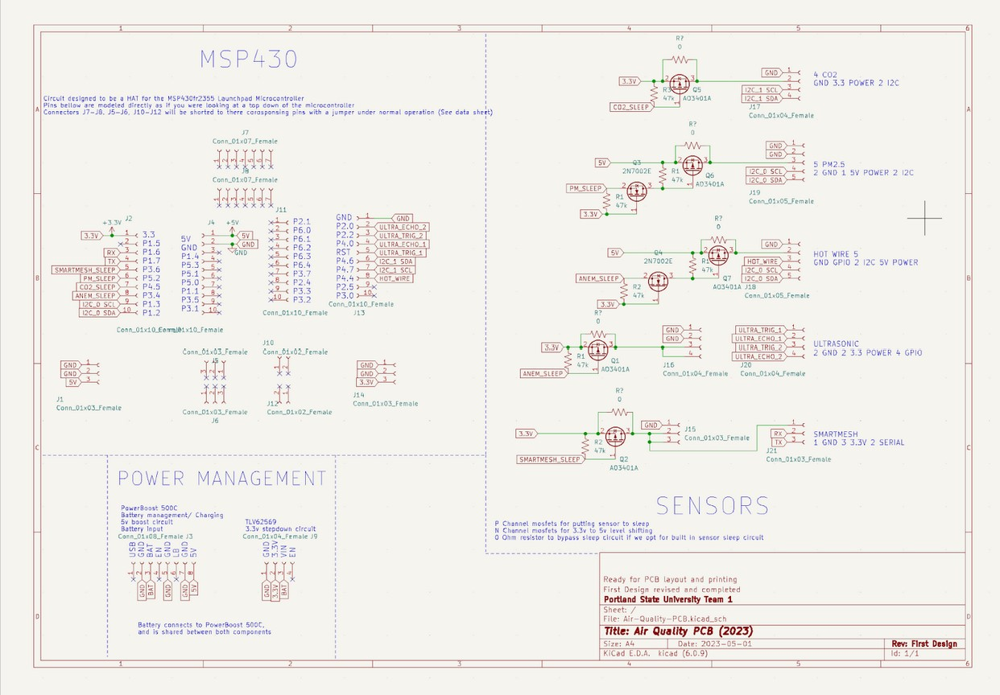
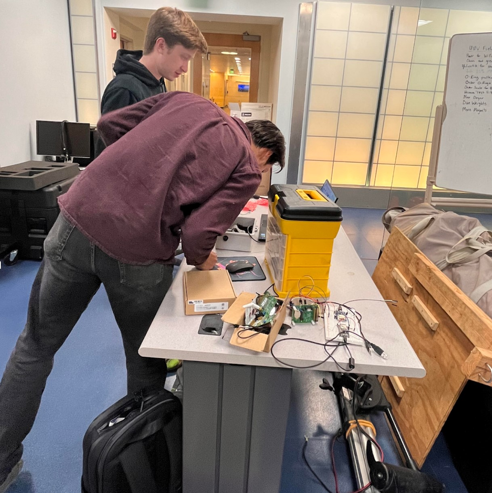

Air quality is very important for safe working conditions. There should be a monitoring system for environmental risks and air pollutants such as CO2 and fine particulate matter (PM2.5), as well as ventilation rates. Our team’s goal was to build a device to monitor elevated or dangerous quantities of these pollutants using as many commercial off-shelf components and open-source software as possible. Our aim was to create 3 to 10 wireless, battery powered initial prototypes that each have at least one year life span.
This project is sponsored by the Wireless Environmental Sensor Technologies (WEST) Lab in the Electrical and Computer Engineering Department at Portland State, run by Dr. David Burnett. The project’s faculty advisor is Dr. John Acken.
Read More


Our team wanted to make it easy to continuously monitor an indoor environment, and report data back to a host. Our aim was to make monitoring easy by making cheap, reliable devices that don't need recharging for a long time. Three features of indoor air quality are expected to be monitored: 2.5 μm particle count or PM2.5, carbon dioxide (CO2) concentration, and ventilation air speed.
Regarding CO2, statistically significant decrements occurred in cognitive performance(decision making, problem resolution) starting at 1000 ppm. CO2 concentration is also a good proxy for ventilation; high CO2 levels mean the room is poorly ventilated, which increases the risk of passing airborne diseases such as COVID19. Regarding PM2.5, the WHO recommends an upper limit of 5 µg/m3 (microgram per cubic meter) average annually and 15 µg/m3 average over a 24 hour period .
An air speed sensor, or anemometer, can help us calculate how much air is flowing into or out of a room and help understand why CO2 and/or PM2.5 is high. The system is based on components past capstone teams have successfully incorporatedsuch as the TI MSP430 (including super low-power sleep modes). In this iteration, a goal was to replace the closed-source proprietary SmartMesh IP wireless system with the OpenWSN open-source wireless networking system.